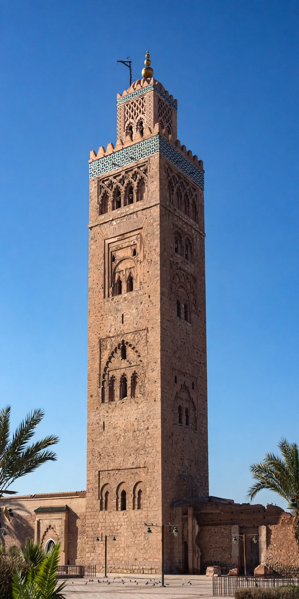

| Almohad Caliphate | |
|---|---|
| Existed | 1121 – 1269 |
| Capital | Marrakesh |
| Founder | Ibn Tumart; Abd al-Mu'min |
| Territory | Maghreb and al-Andalus |

The Almohad Caliphate (from Arabic al-Muwaḥḥidūn, "the monotheists" or "the Unitarians") was a North African Berber Muslim empire founded in the 12th century. At its height it controlled the Maghreb (present-day Morocco, Algeria, Tunisia and Libya) and Muslim Iberia (al-Andalus), making it one of the largest empires of the medieval western Mediterranean.
The movement began with Ibn Tumart, a Masmuda Berber scholar from the Atlas Mountains who, after studying in the east, returned preaching a strict doctrine of divine unity (tawhid) and denouncing the Almoravid rulers as lax and anthropomorphist. Proclaimed the Mahdi around 1121, he established himself at Tinmel in the High Atlas. After his death (c. 1130), his lieutenant Abd al-Mu'min took command, captured Marrakesh in 1147, destroyed the Almoravid state, and declared himself caliph.
Abd al-Mu'min extended Almohad rule across North Africa and into Iberia. His successors, Abu Yusuf Yaqub and Yaqub al-Mansur, defeated Castile at the Battle of Alarcos in 1195 and oversaw a flourishing of architecture — the Koutoubia and Kasbah mosques in Marrakesh, the Giralda in Seville, and the Hassan Tower in Rabat all date to this period. The Almohad court patronised philosophy: the thinkers Ibn Tufayl and Averroes (Ibn Rushd) both served at Marrakesh, though the regime could also be doctrinally severe, forcing conversions on Christians and Jews and ending the protected dhimmi status in much of its territory.
The crushing defeat by a combined Christian army at Las Navas de Tolosa in 1212 broke Almohad power in Iberia. Civil wars among the caliphs, the secession of the Hafsids in Tunis and the Zayyanids in Tlemcen, and the rise of the Marinids in Morocco followed. The last Almohad caliph was deposed in 1269 when the Marinids took Marrakesh.
See also: Marrakesh · Kumbi Saleh